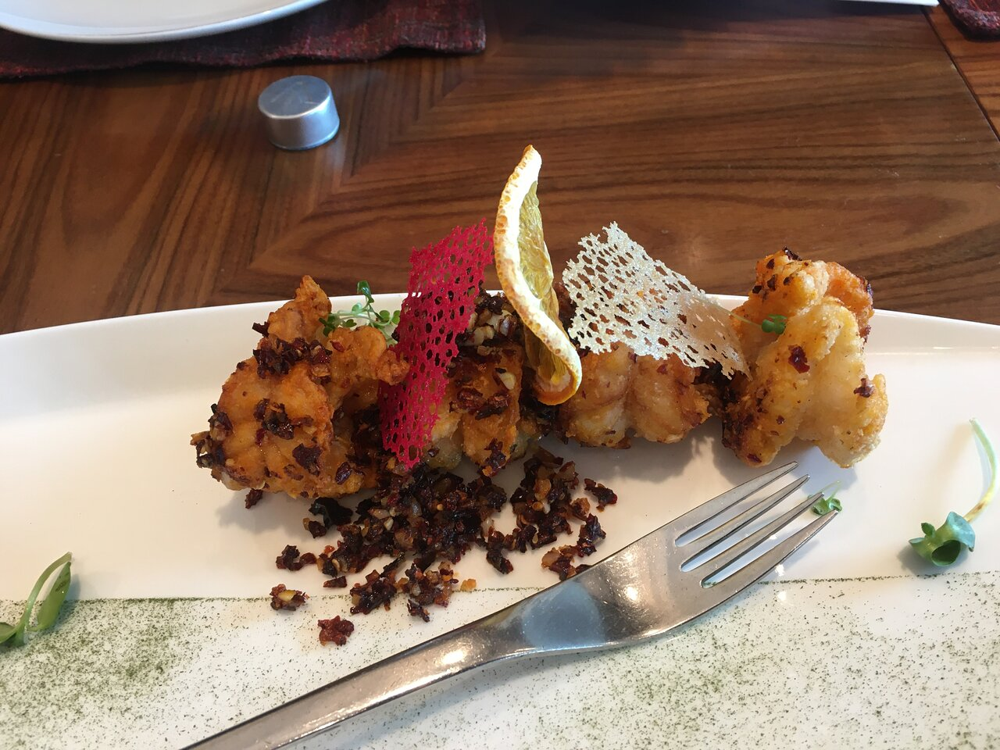
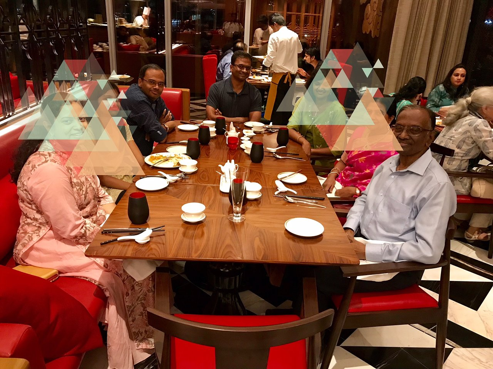

Food and ambience
Local cuisine, Indian, Healthy, Vegetarian Friendly, Vegan Options, Halal
“Ambience was great with live Indian classical music on the beautiful Santoor...”
“Amazing Restaurant”
“... The seekh kabab was excellent and the Kali Mirch Murg tikka was to die for.”
Details
CUISINES Chinese, Asian, Cantonese, Szechuan, Shanghai SPECIAL DIETS Vegetarian Friendly, Vegan Options, Gluten Free Options MEALS Lunch, Dinner FEATURES Reservations, Seating, Validated Parking, Valet Parking, Serves Alcohol, Full Bar, Table Service

